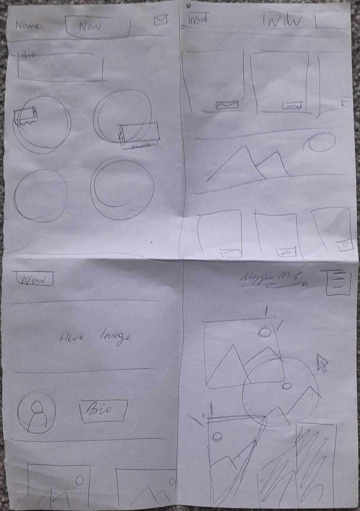

Hello, my mame is Maggie McMillan-Perry! I am a Third Year Student Majoring in Social Innovation and Interaction Design and minoring in Health Policy. My overarching aim is to make more designs that champion accessibility within the healthcare sector.
My goal for this course is to expand my website development skills and to update my portfolio which needs a makeover!
My guiding questions for this course are: How can websites be more visually dynamic to retain attention to users and how can we make websites more accessible to people with disabilities?
Quizz's
Quizz 1: Setting up my Web Folder
Quizz 2: Adding an image to my website
Quizz 3: Functional Navigation
For this one, I decided a light purple with purple accents to contrast with the dark grey. To futher improve this, I want to adding a mail icon as a 'call to action' so clients feel it's easy to contact me.
Quizz 4: Accessibility
Using https://colourcontrast.cc/, I checked my colours were accessible to AA standard. All colours I used in this website fit this brief. I also used light colours to not be too harsh on the viewer.
I also have used semantic HTML through my code. This includes using elements including 'Header', 'Nav', and 'Section'. This helps screen readers understand what content is on the website to relay to people with disabilities.
Quizz 5: Fonts
I used W3 Schools Websafe Fonts to import websafe fonts. I initially started with deafult font for the headings and 'Garmond' for the body text.
I then used Google Fonts to expand my options for fonts. After a few hours, I knew I wanted to have serif headings and sans serif body text. I picked 'Noto Serif' for the headings and 'PT Sans' for the body text. I followed Google Fonts instructinons to import the Google fonts.
Quizz 6: Colours
Version 1 features gold, white and navy blue.
Version 2 features black, light yellow and blue.
Research for my Portfolio:
Empathise & Ideate:
I firstly did Desk Research and found this Article.
7 Design Portfolio Mistakes That Are Costing You Jobs! And How to Fix Them by Interaction Design Foundation.
The Key points of what not to do were:
Going for Quantity over Quality
Lacking curation – Project should reflect with what job your looking for
Lack of Care – be aware of typos, grammar errors, misalignments
Lack of Personalization
Lack of Self Reflection – include what you learnt and what you problem-solved, shows critical thinking
Secondly, I looked at analysing some previously existing websites. I noted down what I liked about them and what parts I wanted to incoperate.
I had previously made a website in 2021 using HTML and CSS. I did a basic UX Heuristic Evaluation to visually see the current issues.
Pros: Hero Image to grab attention, copywrite is personality focused, easy to interact with, can enlarge images.
Cons: Hard to Navigate, bad accessibility colours, doesn't explain case studies, not a responsive website to mobile, outdated material, doesn't clearly state what type of designer I am.
Wireframes:

Prototype
Colours - Detail
Fonts -
Here are all the references I used during the Prototype Stage:
I used the Thumnails Tutorial for images that would be too porportinally large (e.g. the pictures of my old portfolio website). Thumbnails for Large Images on Blog - W3 Schools - Thumbnail Images
I used this a lot whenever I forgot how to do bullet points. Very useful for summarising information on my project pages. Unordered Lists- W3 Schools - HTML Unordered Lists
This tutorial used for the Email Icon on my navigation bar- W3 Schools - Icons
Test
For testing, I wanted a range of people. The first two particpants were designers. I wanted a designers perspective to see it from a layout and 'critical eye' perspective. The third and fourth particpants were non-designers. I wanted a non-designer perspective to focus on the overall navigation and user expierence. The fifth particpant is someone who understands the hiring process for cybersecurity. This was a useful connection to have to see what their perspective was from previous hiring expierence.
The first two tests I just observed what particpants did and notated their feedback.
The later three, I gave them a goal they had to achieve. I also screen-recorded their click-maps and notated any painpoints.
For small element adjustments I had multiple ideas on, I used A/B testing to see what layout users perfered.
In each user test, I iterated the website as I went. The stuff in italics, was advice I did not take onboard as I felt it was not nessasary to add to the website.
User Test #1: Hazel (looking at a paper wireframe) - text should be in the same position for consistancy.
User Test #2: Sarah suggested:
White Background
Shadow or something behind the images
Bold text for navigation
"See my work below" section could have more emphisis with an icon